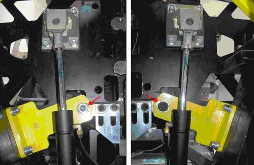

Operating Documentation
Direction 5193574-800, Rev# 22
Module Version 4.0, Version Date 11/13/13
Operating Documentation |
| ||||
| CRUSH HAZARD. | ||||
| Unintended Gantry Tilt Motion Can Occur | ||||
| THIS SERVICE PROCEDURE REQUIRES THE GANTRY TO BE TILTED ALL THE WAY BACK IN ITS MINUS 30 DEGREE POSiTION AND PLACED ON ITS MECHANICAL STOPS. |
| ||||
| CRUSH HAZARD. | ||||
| Unintended Gantry Tilt Motion Can Occur | ||||
| NEVER INTENTIONALLY INTRODUCE AIR INTO THE HYDRAULIC SYSTEM. |
| ||||
| CRUSH HAZARD. | ||||
| Unintended Gantry Tilt Motion Can Occur | ||||
| NEVER EXTEND THE HYDRAULIC PISTONS BY HAND. DOING SO WILL CAUSE INSUFFICiENT HYDRAULIC PRESSURE IN THE SYSTEM WHEN TILT FUNCTION IS RESTORED. |
| ||||
| CRUSH HAZARD. | ||||
| THE NEWLY REPLACED HYDRAULIC CYLINDERS MAY NOT BE UNDER FULL HYDRAULIC PRESSURE. THIS MAY RESULT IN THE GANTRY TILTING SUDDENLY OR ERRATICALLY WHEN THE GANTRY IS MOVED FOR THE FIRST TIME, PAST THE ZERO DEGREE (FULLY UPRIGHT) POSITION. | ||||
| REMAIN CLEAR OF THE GANTRY UPON INITIAL STARTUP AFTER THE HYDRAULIC TILT ASSEMBLY REPLACEMENT. |
| ||||
| ELECTROCUTION HAZARD. | ||||
| 120VAC IS PRESENT AT THE TILT RELAY BOARD. | ||||
| TURNING OFF THE SERVICE SWITCHES WILL NOT REMOVE THIS POWER. |
| ||||
| Electrocution hazard. | ||||
| High Voltages present. | ||||
| Use proper lockout/tagout procedures before replacing components. See safety menu of Service Document gui for appropriate procedures. |
| ||||
| Shock Hazard | ||||
| Voltage Present. | ||||
| No service on left side while energized. |
| ||||
| Follow ALL required safety and PPE procedures customary for your organization, when working on this product. | ||||
| Condition | Reference | Effectivity |
|---|---|---|
Only trained service personnel should service the GE Scanner. | - | - |
| ||||
| CRUSH HAZARD. | ||||
| Unexpected gantry motion can occur if hydraulic cylinders are extended before installation. | ||||
| NEVER EXTEND THE HYDRAULIC PISTONS BY HAND. DOING SO WILL CAUSE Insufficient HYDRAULIC PRESSURE IN THE SYSTEM WHEN TILT FUNCTION IS RESTORED. |
To proceed, inspect the replacement gantry tilt hydraulic unit and hydraulic cylinders for any damage in shipment. There should be no leaking oil and no residual oil in the shipping crate. The hydraulic pistons should be fully compressed into their cylinders. (Do not extend the pistons by hand.)
If you suspect that the replacement unit is not in proper condition for installation or appears damaged in any way stop the replacement process and escalate by calling Field Leadership for further direction.
If you do not see any damage remove the replacement unit from its shipping crate being careful not to kink the hydraulic lines.
Move the table to it's full out and up position to allow full gantry tilt functionality during this procedure.
Remove the gantry right side cover and disable 120VAC, Axial Drive and HVDC on the Service Switch Panel. See Illustration 3 if necessary for service switch panel illustration.
Remove gantry left side, top, rear and base covers. Tilt Hydraulic Assembly is located in the base of the gantry.
Remove the left and right safety covers from the both sides of the gantry. These are the covers attached to the tilting assembly attached to the bottom.
| ||||
| CRUSH HAZARD | ||||
| UNINTENDED GANTRY TILT MOTION CAN OCCUR IF BOLTS ARE REMOVED, LOOSE OR DAMAGED | ||||
| NEVER PLACE ANY PORTION OR EXTENSION OF YOUR BODY BETWEEN THE ROTATING AND FIXED GANTRY FRAME ASSEMBLIES. USE HAND TOOLS WITH EXTENSIONS TO MAINTAIN SAFE CLEARANCES |
To proceed:
If there is NOT sufficient pressure in the system to tilt the gantry all the way back to its resting position on the mechanical stops and the Safety Brackets are still installed (Gantry at zero (0) degrees):
Shut the system down and perform LOTO at the A1 Mains Disconnect panel.
Remove both side covers, any top Covers/fans and the Rear Cover. If necessary, refer to Parts Replacement→Gantry→Enclosure→(Cover Removal Procedures).
Locate the Tilt Locking Brackets (Yellow Shipping Brackets) on the left and right side of the gantry. Using a 10mm and 14mm Hex wrench, make sure the bolts on these brackets are in place and have not loosened up during gantry transport. Tighten them if necessary.
Proceed to Step 7.
If enough hydraulic pressure exists in the system to tilt the gantry all the way back to its resting position on the mechanical stops:
Remove the rear cover bottom cantrell brackets (rear cover bottom latches). Failure to remove these brackets can cause damage to them during gantry tilt as they will hit the gantry stationary leg and bend or limit tilt when tilting all the way back
Power on the 120VAC switch on the service switch panel. Enable table drives from the push button on the lower right of the service switch panel.
| ||||
| CRUSH HAZARD. | ||||
| Unintended Gantry Tilt Motion Can Occur | ||||
| THIS SERVICE PROCEDURE REQUIRES THE GANTRY TO BE TILTED ALL THE WAY BACK TO ITS MINUS 30 DEGREE Position AND PLACED ON ITS MECHANICAL STOPS. |
From the Service Switch Panel, turn ON the Service Mode and Tilt Enable switches. Use the Tilt switch (S10) to tilt the gantry Backward until it stops at the mechanical stops. Refer to Illustration 2 for a side view example of the gantry position.
Verify the gantry is tilted all the way back and resting on the mechanical stops.
Turn OFF the Tilt Enable, Service Mode and 120 VAC switches on the Service Switch Panel.
Shutdown system software and turn off the console power switch under the console table top.
Remove all system power at the main disconnect (A1) panel. Perform proper Lockout/Tagout power control procedures.
While viewing the gantry from the rear, the gantry Tilt Hydraulic Assembly is located inside the right gantry base assembly of the gantry. Label the wires located on the gantry Tilt Relay Board for later assembly if not already labeled.
Loosen and pull the gantry IPC board mounting bracket away far enough to allow the tilt assembly to be removed. As shown in Illustration 6 the IPC bracket overlaps the tilt assembly bracket.
While viewing the gantry from the rear, disconnect the three-phase power plug at the side of the gantry power pan, located inside the left side of the gantry base assembly.
Remove the rear screws securing the gantry Tilt Hydraulic Assembly to the gantry base frame.
Loosen the front screws securing the gantry Tilt Hydraulic Assembly. Their complete removal is not necessary.
Disconnect and remove the cables connections and wires at the terminal on the Tilt Relay Board.
Identify all tie wraps and fasteners securing the hydraulic lines to the gantry frame and Take note of the routing of these hydraulic lines.
Remove any fasteners and tie wraps securing the hydraulic lines to the gantry base frame and hydraulic cylinder. Be careful not to puncture or kink any of the hydraulic lines
Remove the TGPU Assembly to gain access to the left side hydraulic cylinder mount bolts.
Remove both hydraulic cylinders using the following process.
Loosen but do not remove the 4 hex socket screws at the top of the left hydraulic cylinder mount bracket. Keep your hands clear of potential gantry pinch points at all times. See Illustration 7.
Remove the spring clip from the pin holding the bottom of the cylinder. Push the pin out from the inside of the gantry toward the outside to release the bottom of the cylinder from the gantry. See Illustration 9.
Remove the 4 hex socket screws at the top to release the entire cylinder from the gantry.
Remove the hydraulic cylinder and its lines from the gantry base.
Repeat for the other hydraulic cylinder.
Completely remove the gantry Tilt Hydraulic Pump Assembly from the gantry base.
To proceed:
If the Gantry is resting on its mechanical stops (all the way back), proceed with Step 2.
If the Gantry is at Zero (0) degrees and the safety brackets are installed, proceed to Hydraulic Tilt Motor Assembly Installation: Gantry at Zero Degrees.
Move the replacement unit to the back of the gantry.
Install the gantry Tilt Motor Assembly into the base. Secure the gantry Tilt Motor Assembly with its four screws.
Install the new hydraulic cylinders using the following steps. Make sure the hydraulic lines are properly routed along the gantry frame.
Position the hydraulic cylinder, apply Loctite 242 to the 4 (four) M12 screws and install the top bracket but do not tighten yet.
Position the bottom of the hydraulic cylinder in the bottom gantry mount and install the pin from the outside of the gantry frame.
Install the spring clip in to keep the pin in place. Reference Illustration 11.
Repeat for other hydraulic cylinder.
Loosely secure all hydraulic lines with tie wraps. Do not tighten the tie-wraps at this time. Make sure to leave approximately 1 inch (2.5 cm) of slack on both left and right cylinder lines at the cylinder to prevent hose damage during forward tilt.
Attach all wires and cables removed from the gantry Tilt Relay Board.
Torque the M12 screws for the upper left cylinder mount bracket to the values shown in Table 1.
Torque the M12 screws for the upper right cylinder bracket to the values shown in Table 1.
Install the TGPU Assembly to the gantry frame. If any tie wraps were removed from the cables, re-install new ones. Attach any cables removed.
Install the IPC board mounting bracket and interface panel using the same screws previously removed. See Illustration 6 for screw location reference.
Remove Lockout/Tagout following all Lockout/Tagout procedures to restore main power and restore power to the Gantry, Table and Console.
| ||||
| CRUSH HAZARD. | ||||
| THE NEWLY REPLACED HYDRAULIC CYLINDERS MAY NOT BE UNDER FULL HYDRAULIC PRESSURE. THIS MAY RESULT IN THE GANTRY TILTING SUDDENLY OR ERRATICALLY IF THE GANTRY IS MOVED PAST THE ZERO DEGREE (FULLY UPRIGHT) POSITION. | ||||
| REMAIN CLEAR OF THE GANTRY UPON INITIAL STARTUP AFTER THE HYDRAULIC TILT ASSEMBLY REPLACEMENT. NEVER INTENTIONALLY INTRODUCE AIR INTO THE HYDRAULIC SYSTEM. |
Enable the gantry tilt function, High voltage, and 120VAC service switches from the service switch panel and press the table drives reset.
Place the Service Switch S4 in the “Service Mode” Position.
Make sure the Tilt Enable switch S9 is enabled.
Use the manual tilt switch S10 to drive the gantry off of its stops approximately 1 inch (2.5cm).
Set the Service Switch S4 to the “Normal Mode” position and Tilt Enable switch S9 to “OFF”.
Turn on the Console using the power switch under the console table top. The system software should automatically boot the system up to full operation.
| NOTE: | For 1 FE only perform Step 18. For 2 or more FEs perform Step 19. |
(For 1 FE only) If another Field Engineer is not present to aid in the initial movement of the gantry, proceed as follows. When moving the gantry tilt for the first time periodically stop titling the gantry and check the gantry movement for obstructions and slack in the hydraulic lines.
Stand at the side of the gantry (clear of tilt motion) and use one of the operators control panels on the front of the gantry to tilt the gantry forward using the tilt feature to tilt the gantry to the -20 degree position for first time and stop.
Check the hydraulic lines to ensure that there is enough slack to accommodate further tilting.
Stand at the side of the gantry (clear of tilt motion) and use one of the operators control panels on the front of the gantry to tilt the gantry forward using the tilt feature to tilt the gantry to the -10 degree position for first time and stop.
Check the hydraulic lines on both sides to ensure that there is enough slack to accommodate further tilting.
| NOTE: | It may be possible for the gantry to move erratically when it passes through the zero degree (fully upright) position the first time and its weight becomes supported by the new hydraulic system. |
While staying clear of the gantry (stand at its side), use one of the operators control panels on the front of the gantry to continue tilting the gantry forward to the zero degree (Fully upright) position and stop.
Check the hydraulic lines to ensure that there is enough slack to accommodate further tilting.
While staying clear of the gantry (stand at its side), use one of the operators control panels on the front of the gantry to continue tilting the gantry forward to the + 10 degree position and stop. Be prepared for possible erratic tilt motion during this step.
At the + 10 degree position check the hydraulic lines for proper slack and gantry in general for any other obstructions.
While staying clear of the gantry (stand at its side), use one of the operators control panels on the front of the gantry to continue tilting the gantry forward to the +30 degree position where it should come to a complete stop.
At this time tighten up the tie wraps by hand holding the hydraulic lines.
Continue with Step 20.
(For 2 or more FEs) If another Field Engineer is available on site, have one person observe the hydraulic lines and gantry motion by standing behind and clear of the gantry during this first tilt.
Use one of the operators control panels on the front of the gantry to tilt the gantry forward using the tilt feature to tilt the gantry to the -10 degree position for first time and stop.
Stop and check the hydraulic lines to ensure that there is enough slack to accommodate further tilting.
| NOTE: | It may be possible for the gantry to move erratically when it passes through the zero degree (fully upright) position the first time and its weight becomes supported by the new hydraulic system. |
While staying clear of the gantry (stand at its side), use one of the operators control panels on the front of the gantry to continue tilting the gantry forward to the zero degree (Fully upright) position and stop. During the tilt the observer should stop the tilt if he/she observes any problem with the hydraulic lines or the gantry encounters any obstructions.
While staying clear of the gantry (stand at its side), use one of the Operators control panels on the front of the gantry to continue tilting the gantry forward to the + 10 degree position and stop.
Check the hydraulic lines for proper slack and gantry in general for any other obstructions.
While staying clear of the gantry (stand at its side), use one of the Operators control panels on the front of the gantry to continue tilting the gantry forward to the +30 degree position where it should come to a complete stop.
At this time tighten the tie wraps holding the hydraulic lines.
Place the Service Switch in the “Service” Position.
Make sure the Tilt Enable switch is enabled.
Use the manual tilt switch to drive the gantry to the zero degree (fully upright) position and stop.
Set the Service Switch to the “Normal” position.
While staying clear of the gantry (stand at its side), use one of the Operators control panels on the front of the gantry to resume tilting the gantry, exercising the new tilt hydraulic assembly completely through its full range of motion.
Exercise the tilt function at least 6 full cycles (-30 to +30) to purge any air from the hydraulic system.
Place the gantry at its zero degree (fully upright) position and stop.
| ||||
| CRUSH HAZARD | ||||
| THE HYDRAULIC TILT MOTOR ASSEMBLY IS SHIPPED WITH THE CYLINDERS COMPLETELY COMPRESSED. WHEN THEY ARE EXTENDED FOR THE FIRST TIME THERE IS NOT SUFFICIENT HYDRAULIC PRESSURE TO SUPPORT THE ROTATING FRAME. BECAUSE OF THIS, REMOVAL OF THE YELLOW TILT BRACKETS WITHOUT BLEEDING THE HYDRAULIC SYSTEM FIRST (BUILDING UP SUFFICIENT HYDRAULIC PRESSURE) WILL RESULT IN SUDDEN MOVEMENT OF THE ROTATING FRAME BACKWARDS. | ||||
| NEVER PLACE ANY PORTION OR EXTENSION OF YOUR BODY BETWEEN THE ROTATING AND FIXED GANTRY FRAME ASSEMBLIES. USE HAND TOOLS WITH EXTENSIONS TO MAINTAIN SAFE CLEARANCES. |
| ||||
| CRUSH HAZARD | ||||
| UNINTENDED GANTRY TILT MOTION CAN OCCUR IF BOLTS ARE REMOVED, LOOSE OR DAMAGED | ||||
| NEVER PLACE ANY PORTION OR EXTENSION OF YOUR BODY BETWEEN THE ROTATING AND FIXED GANTRY FRAME ASSEMBLIES. USE HAND TOOLS WITH EXTENSIONS TO MAINTAIN SAFE CLEARANCES. |
Reconnect the three-phase power plug at the side of the gantry power pan, located inside the left side of the gantry base assembly as viewed from the back of the gantry.
Remove any LOTO equipment and restore power to the gantry.
Enable the 120VAC at the Service Switch Panel.
Set the Service Switch (S4) at the Service Switch Panel to the “Service” position.
Place the Tilt Enable switch (S9) at the Service Switch Panel to “ON” position.
Use the Tilt Direction Switch (S10) to slowly extend the actuator rods.
Position the actuator rod for the first hydraulic cylinder to reach its mount location.
Apply Loctite 242 and install the 4 (four) M12 screws in the top bracket but do not completely tighten yet.
Using the Tilt Direction Switch (S10) slowly extend the remaining actuator rod until it reaches its mount point.
Apply Loctite 242 and install the 4 (four) M12 screws in the top bracket.
Torque the M12 screws for the upper cylinder brackets to the values shown in table.
Using a 14mm Hex wrench and appropriate extensions barely loosen the 16mm bolt on the Tilt bracket on each side of the gantry. Loosen them just enough to allow the Rotating Frame to move or tilt back slightly within the range of the bolt hole. You want a sufficient amount of friction between the bolt and bracket so they slide back and forth in the bolt hole. Refer to illustration X:
Illustration 12: Slightly Loosen Bolt

Rock the Rotating Frame back and forth. Engage the Tilt Direction Switch (S10) FORWARD for 5-6 seconds or until the rotating frame stops. The bracket should be tight against the 16mm bolt.
Check the tension on each actuator rod by twisting them by hand. If there is too much air in the system they will twist easily by hand. They will get harder to twist as the hydraulic pressure in the system increases.
Engage the Tilt Direction Switch (S10) BACKWARD 5-6 seconds or until the rotating frame stops. The bracket should be tight against the 16mm bolt.
Check for improved hydraulic pressure by twisting the actuator rods by hand on each side.
Engage the Tilt Direction Switch (S10) FORWARD 5-6 seconds or until the rotating frame stops. The bracket should be tight against the 16mm bolt.
Check for improved hydraulic pressure by twisting the actuator rods by hand on each side.
Repeat this process at least 10 times. The actuator rods will become very difficult to twist by hand.
Engage the Tilt Direction Switch (S10) BACKWARD approximately 2 seconds or until the 16mm bolt is centered in the bolt hole on the Tilt bracket. This indicates that sufficient pressure is present to hold the rotating frame in place when the Tilt brackets are removed.
Using the appropriate extensions and hex wrench to provide safe clearance between rotating and stationary frames, remove the 16mm Tilt Bracket bolt from the left side of the gantry as viewed from the back of the gantry.
Using the appropriate extensions and hex wrench to provide safe clearance between rotating and stationary frames, remove the 16mm Tilt Bracket bolt from the right side of the gantry as viewed from the back of the gantry.
Once the Rotating Frame is free use the Tilt Direction Switch (S10) to “Jog” the Rotating Frame a few degrees in both directions to ensure there is sufficient hydraulic pressure in the system to control the tilt function.
Remove the remaining bolts from the Tilt brackets and remove them completely from the gantry.
Turn on the Console using the power switch under the console table top. The system software should automatically boot the system up to full operation.
Have one FE stand at the side of the gantry and observe the hydraulic lines.
Set the Service Switch (S4) to “Normal” position.
Place the Tilt Enable Switch (S9) to “OFF” position.
Stand at the side of the gantry (clear of tilt motion) and use one of the operators control panels on the front of the gantry to tilt the gantry forward using the tilt feature to tilt the gantry to the -20 degree position for the first time and stop.
Check the hydraulic lines to ensure that there is enough slack to accommodate further tilting.
Stand at the side of the gantry (clear of tilt motion) and use one of the operators control panels on the front of the gantry to tilt the gantry forward using the tilt feature to tilt the gantry to the -10 degree position for first time and stop.
Check the hydraulic lines on both sides to ensure that there is enough slack to accommodate further tilting.
While staying clear of the gantry (stand at its side), use one of the operators control panels on the front of the gantry to continue tilting the gantry forward to the zero degree (fully upright) position and stop.
Check the hydraulic lines to ensure that there is enough slack to accommodate further tilting.
While staying clear of the gantry (stand at its side), use one of the operators control panels on the front of the gantry to continue tilting the gantry forward to the + 10 degree position and stop. Be prepared for possible erratic tilt motion during this step.
At the + 10 degree position check the hydraulic lines for proper slack and gantry in general for any other obstructions.
While staying clear of the gantry (stand at its side), use one of the operators control panels on the front of the gantry to continue tilting the gantry forward to the +30 degree position where it should come to a complete stop.
At this time tighten up the tie wraps by hand holding the hydraulic lines.
Tilt the gantry back to the zero degree (fully upright) position and stop.
Continue with Section 5 FINALIZATION.
Install the 2 rear cover lower cantrell brackets (bottom latches) previously removed.
When the tilt pump is warm to the touch, make final speed adjustments. Refer to Hydraulic Tilt Motor Speed Adjustment.
Reassemble gantry by replacing any covers removed. Remember to remove power prior to replacing covers and restore power when done.
Refer to “Clean-up and Personal Hygiene,” located in Equipment Service - Chemicals and Materials, for proper disposal of contaminated materials.
Perform a system test using the System Scanning Test found in the Functional Checks folder.